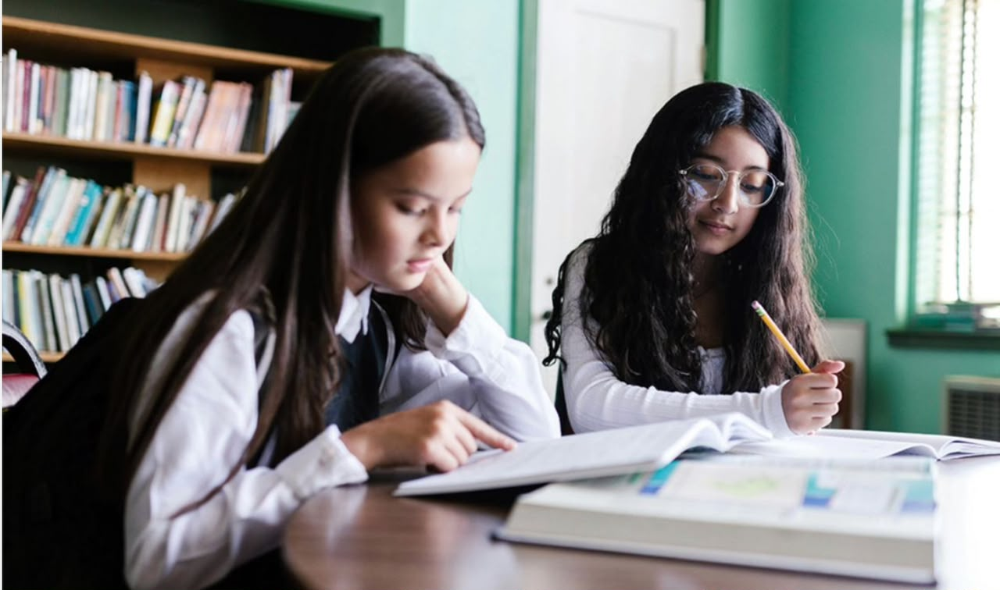
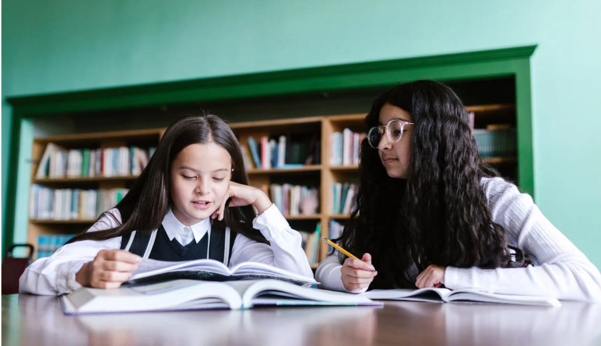
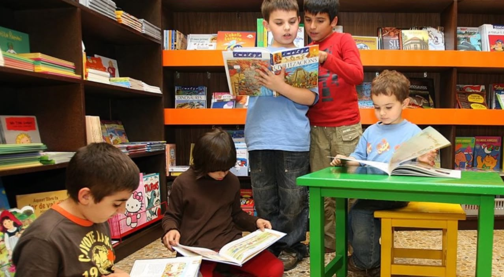

Chile frente al desafío de la lectura
Mejorar la comprensión lectora desde los primeros años de escolaridad es uno de los desafíos de la educación chilena. El Ministerio de Educación ha impulsado iniciativas orientadas a fortalecer el aprendizaje lector y detectar tempranamente las dificultades de los estudiantes.
Pero ¿qué sabemos realmente sobre el problema que Chile busca resolver?
Para ampliar este diagnóstico, analizamos los resultados de PISA entre 2012 y 2022, observando cómo ha evolucionado la comprensión lectora de los estudiantes chilenos según su género y contexto socioeconómico.
Una aparente buena noticia
Entre 2018 y 2022, la distancia en comprensión lectora entre los estudiantes chilenos de mayor y menor nivel socioeconómico se redujo. En los hombres, pasó de 99 a 82 puntos, mientras que en las mujeres disminuyó de 98 a 84 puntos.
A primera vista, estas cifras podrían interpretarse como un avance hacia una educación más equitativa.
Lo que esconden las cifras
Para entender por qué se han reducido estas diferencias, es necesario observar qué ocurrió con el rendimiento de cada grupo.
Los datos muestran que parte de este acercamiento responde al retroceso de quienes históricamente obtenían mejores resultados.
Sin embargo, el deterioro no se distribuye de manera uniforme. Para entender cómo está afectando a los estudiantes chilenos, analizamos dos variables que históricamente han marcado el rendimiento lector.
Una ventaja que no es universal
Desde que Chile comenzó a participar en PISA, las mujeres han obtenido mejores resultados nacionales en comprensión lectora que los hombres. Sin embargo, este patrón cambia cuando incorporamos una segunda variable: el contexto socioeconómico.
Para estudiarlo, PISA cuenta con un índice económico, social y cultural (ESCS), que considera aspectos como la educación y ocupación de los padres y los recursos disponibles en el hogar.
A partir de este indicador, agrupamos a los estudiantes en cinco segmentos, llamados quintiles.
Cada quintil representa aproximadamente un 20% de la población estudiantil con información socioeconómica disponible.
El grupo que rompió la tendencia
En 2018, las mujeres del tercer quintil, correspondiente al segmento socioeconómico intermedio, superaban a los hombres de su mismo grupo por más de 22 puntos. Cuatro años después, esa ventaja había desaparecido en los puntajes estimados.
Mientras los hombres aumentaron su puntaje en aproximadamente 10 puntos, las mujeres retrocedieron cerca de 16.
Aunque este análisis no permite afirmar que los hombres hayan alcanzado un rendimiento significativamente superior, el caso muestra que la ventaja femenina observada a nivel nacional no se reproduce de la misma manera en todos los sectores.

Una generación, distintas formas de leer
La preocupación por la lectura también se extiende más allá de las escuelas. El Plan Nacional de la Lectura, Escritura y Oralidad busca fomentar la lectura como práctica social y cultural durante toda la vida.
A partir de los microdatos de la Encuesta Nacional de Participación Cultural y Comportamiento Lector de 2024 y de la Encuesta de Comportamiento Lector de 2014, analizamos cómo ha cambiado la relación de los jóvenes lectores con los libros durante una década.
Entre las jóvenes lectoras, la proporción que lee once libros o más al año casi se triplicó. Al mismo tiempo, aumentó el grupo que lee apenas uno o dos.
Si observáramos únicamente el promedio de libros leídos, este contraste podría pasar inadvertido.
Aunque los datos no permiten establecer una relación directa con los resultados de PISA, muestran que las mujeres jóvenes tampoco constituyen un grupo homogéneo en sus prácticas lectoras.
Cuando las ventajas no son suficientes
Los estudiantes de hogares más favorecidos suelen obtener mejores resultados en comprensión lectora. Sin embargo, contar con mayores ventajas socioeconómicas no ha impedido que sus puntajes retrocedan.
Al comparar las últimas mediciones de PISA, encontramos que los distintos sectores han seguido trayectorias diferentes.
Desde 2015, los resultados del quintil más bajo se han mantenido relativamente estables. En el quintil más alto, en cambio, el retroceso se intensificó después de 2018.
El deterioro del rendimiento lector no se concentra necesariamente en los sectores que históricamente han presentado mayores dificultades.
Esto no significa que las condiciones socioeconómicas hayan perdido importancia. Fuera de la sala de clases, encontramos diferencias que siguen siendo pronunciadas.

Leer no supone el mismo esfuerzo para todos
Perder la concentración, tener que volver sobre un párrafo o no lograr comprender lo que dice un texto son dificultades que pueden aparecer al momento de leer.
La Encuesta Nacional de Participación Cultural y Comportamiento Lector de 2024 permite conocer algunas de estas dificultades a partir de las respuestas de los propios encuestados.
Entre las personas de nivel socioeconómico bajo, la proporción que declara dificultades para comprender lo que lee es más del doble que entre aquellas de nivel alto.
Algo similar ocurre con la concentración y el ritmo de lectura.
Estas respuestas reflejan percepciones personales y no resultados de una prueba de competencias. Aun así, permiten observar una dimensión del problema que los puntajes escolares no muestran: cómo las personas experimentan la lectura en su vida cotidiana.
¿Qué significa obtener un bajo puntaje en lectura?
Hablar de una caída de 10 o 15 puntos puede resultar abstracto. Para comprender qué representan estos resultados, PISA establece distintos niveles de competencia lectora, según la complejidad de las tareas que los estudiantes pueden realizar.
Dificultades para realizar tareas básicas de comprensión.
Umbral básico de competencia lectora.
Tareas de comprensión de complejidad creciente.
Alcanzar el nivel 2 implica, entre otras habilidades, poder identificar la idea principal de un texto y localizar información siguiendo determinados criterios.
Estar por debajo de este nivel no significa necesariamente no saber leer, sino presentar dificultades para realizar algunas tareas básicas de comprensión.
estudiantes hombres del quintil socioeconómico más bajo se encontraba por debajo del nivel 2 en 2022, aproximadamente.
Cada figura representa aproximadamente un punto porcentual. Fuente: PISA 2022.
Pero el problema no es exclusivo de los sectores más desfavorecidos.
Entre los hombres del quintil más alto, la proporción de estudiantes bajo el nivel 2 pasó de un 15% a un 20%. Entre las mujeres del mismo grupo también se observa un aumento.
El deterioro de estos sectores no solo se refleja en sus puntajes promedio. También se observa una mayor proporción de estudiantes que no alcanza las competencias lectoras básicas.

Una crisis que va más allá de los puntajes
El género y el nivel socioeconómico, dos categorías que históricamente han permitido describir las desigualdades lectoras en Chile, resultan insuficientes cuando se analizan de manera aislada.
Las distintas trayectorias de rendimiento, la diversidad de los hábitos lectores y las dificultades asociadas al contexto social dan cuenta de un problema que trasciende los aprendizajes escolares.
Rendimiento
Las ventajas históricas no garantizan la estabilidad de los aprendizajes.
Hábitos
Los promedios pueden ocultar experiencias lectoras muy diferentes dentro de un mismo grupo.
Dificultades
Las condiciones sociales siguen marcando la experiencia cotidiana de leer.
Frente a los esfuerzos de las políticas públicas por fortalecer el aprendizaje lector y fomentar la lectura, nuestros resultados muestran la importancia de ampliar el diagnóstico.
La crisis lectora en Chile no puede entenderse únicamente a partir de los puntajes escolares. También involucra cómo las personas se relacionan con la lectura, en qué condiciones lo hacen y qué dificultades enfrentan.
Dimensiones educativas, sociales y culturales que las políticas públicas necesitan considerar en conjunto.
Metodología y fuentes
Esta investigación analiza tres dimensiones de la desigualdad lectora: rendimiento escolar, hábitos de lectura y dificultades lectoras declaradas.
01. Rendimiento escolar: PISA
Utilizamos una base previamente procesada de resultados chilenos de PISA correspondientes a 2012, 2015, 2018 y 2022.
A partir de sus estimaciones por sexo y quintil socioeconómico, calculamos diferencias de puntaje, variaciones entre mediciones y cambios en la proporción de estudiantes bajo el nivel 2.
02. Hábitos lectores: 2014 y 2024
Analizamos registros individuales de la Encuesta de Comportamiento Lector de 2014 y de la Encuesta Nacional de Participación Cultural y Comportamiento Lector de 2024.
Utilizamos factores de expansión para calcular distribuciones de libros leídos por ocio durante los últimos doce meses, con especial atención a los jóvenes de 15 a 19 años.
03. Dificultades lectoras
A partir de ENPCCL 2024, calculamos porcentajes ponderados de dificultades declaradas de comprensión, concentración, ritmo de lectura y paciencia, según nivel socioeconómico.
04. Políticas públicas
Las iniciativas de fortalecimiento del aprendizaje lector y de fomento de la lectura permiten contextualizar los resultados de esta investigación.
El análisis no constituye una evaluación de la efectividad de estas políticas.
05. Procesamiento y limitaciones
Los análisis se realizaron mediante Python en Google Colab. Los resultados fueron exportados en formato CSV y utilizados para construir visualizaciones interactivas con Vega-Lite.
Las comparaciones de PISA son descriptivas. No incorporan todos los componentes de incertidumbre necesarios para establecer significancia estadística entre ciclos, incluido el error de enlace.
La comparación de hábitos lectores considera población urbana de 15 a 64 años que declaró leer libros por ocio y reportó una cantidad positiva y válida. El análisis juvenil se restringe a las edades de 15 a 19 años.
Las encuestas presentan diferencias metodológicas y no siguen a las mismas personas a lo largo del tiempo. PISA y las encuestas culturales tampoco evalúan exactamente a la misma población.
Por lo tanto, los resultados no permiten establecer relaciones causales entre los hábitos lectores, el contexto socioeconómico y el rendimiento escolar.
06. Datos y reproducibilidad
Las bases utilizadas, los códigos de análisis y la documentación del proyecto se encuentran disponibles en nuestro repositorio.
Ver repositorio en GitHub